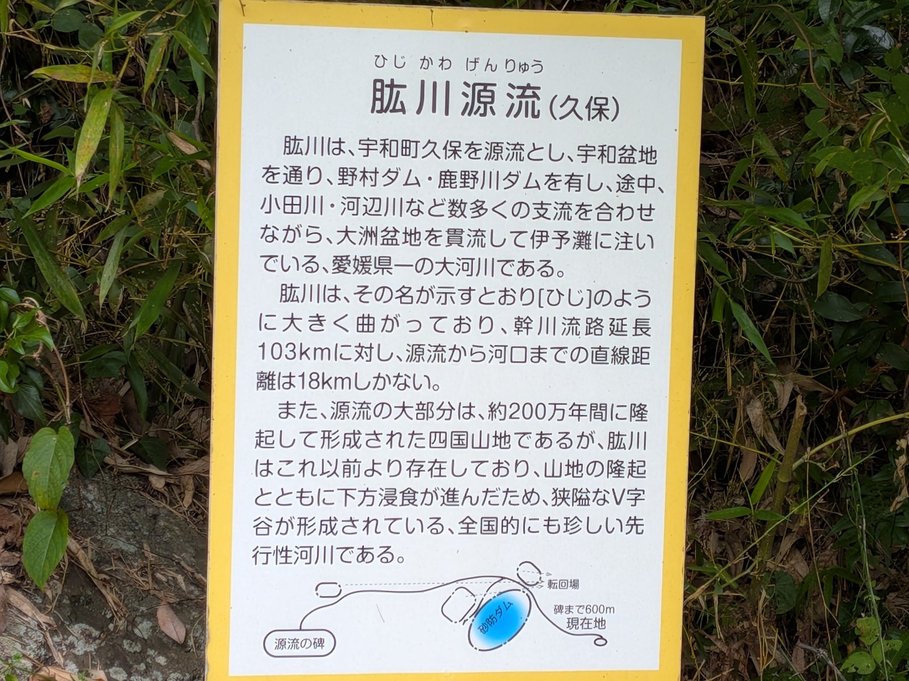

メモう
メモう
肱川は支川が多いってよう言うけど、どれくらい多いんやろか。
数えたら474本。全国5位で、流域面積のほうは55位やった。
面積で割り直したら、2位の2.8倍。ちょっと信じられん数字よ。
目次
- 「支川が多い」は、どれくらい多いのか
- 肱川の基本スペック
- 支川数、全国５位。流域面積は55位
- 密度で計算し直したら、２位の2.8倍だった
- なぜそんなに支川が多いのか。山地９割という地形
- 直線18ｋｍ、実際103ｋｍ。なぜ遠回りするのか
- 先行河川。山ができる前から、川はそこにあった
- ４億年の地層の上を流れている
- 河口に近づくほど狭くなる、とても稀な川
- 103ｋｍで460ｍ。傾きを計算すると、日本の川としてはゆるい
- 海水が12ｋｍ遡ってくる
- どうやって調べたのか。河川法という枠組み
- 「支川を１本」と数えるとはどういうことか
- 合流の順番を、源流から河口までたどる
- 舟運と長浜。人が肱川をどう使ってきたか
- 173年のうち62年が出水。水害の歴史
- 肱川あらしという、この川だけの現象
- 調べても分からなかったこと
- 肱川という川の個性
「支川が多い」は、どれくらい多いのか
以前、肱川の源流と合流点をたどる記事を書いた[１]。鳥坂峠から伊予灘まで103ｋｍ。
源流のすぐそばに宇和海があるのに、そちらへは向かわずに反対側の瀬戸内海を目指す——という、あの話だ。
あの記事を書いたあと、「支川が多い川らしい」という情報は目にしていたのだが、「多い」が具体的に何本で、全国で何番目なのかを確認していなかった。
地元の川について、そこを曖昧にしたままなのが気持ち悪かった。
そこで今回は、数字を全部拾い直すことにした。国土交通省が公表している肱川水系の資料を当たり、全国の一級河川と比べ、さらに自分で計算し直した。
結果として出てきたのは、「多い」なんて言葉では全然足りないという事実だった。
そしてついでに、「川を数えるとはどういうことか」という、調べる前は考えたこともなかった話にも行き着いた。
肱川の基本スペック
まず基本のデータを整理しておく。出典は国土交通省の肱川水系河川整備基本方針の 参考資料などによる[２]。
| 項目 | 数値 | 補足 |
|---|---|---|
| 水系等級 | 一級水系 | 全国に109ある一級水系の１つ |
| 幹川流路延長 | 103ｋｍ | 本川（肱川）の源流から河口までの長さ |
| 流域面積 | 1,210ｋｍ² | 雨が降ったら肱川に集まってくる範囲 |
| 支川数 | 474河川 | 全国５位。資料によっては475と表記 |
| 水源 | 鳥坂峠（西予市宇和町久保） | 標高460ｍ |
| 河口 | 伊予灘（大洲市長浜町） | 瀬戸内海側 |
| 源流～河口の直線距離 | 約18ｋｍ | 流路延長の約６分の１ |
| 流域の地形 | 約９割が山地 | 下流部に大規模な平野がない |
| 流域自治体 | 西予市・大洲市・内子町・伊予市・砥部町 | すべて愛媛県内で完結 |
支川数について、資料によって474と475の２つの数字が出てくる。
国土交通省の資料や、同省への取材にもとづく記事では474。一方、河川データをまとめた民間のランキング表では475となっている。
１本の差がどこから来るのかは特定できなかったので、この記事では公式資料に合わせて474を基本とし、計算には影響しない範囲であることを確認したうえで進める。
支川数、全国５位。流域面積は55位
では、474本という数字は全国でどのあたりなのか。 支川数の多い順に並べたのが次の表だ[３]。
| 順位 | 河川 | 支川数 | 流域面積（ｋｍ²） |
|---|---|---|---|
| １ | 淀川 | 962 | 8,240 |
| ２ | 信濃川 | 880 | 11,900 |
| ３ | 利根川 | 810 | 16,840 |
| ４ | 富士川 | 555 | 3,990 |
| ５ | 肱川 | 474 | 1,210 |
| ６ | 石狩川 | 457 | 14,330 |
| ７ | 最上川 | 429 | 7,040 |
| ８ | 木曽川 | 391 | 9,100 |
| ９ | 吉野川 | 356 | 3,750 |
| 10 | 天竜川 | 332 | 5,090 |
支川数では堂々の５位。ここまでは資料に書いてあるとおりだ。 しかし、この表の右端の列を見てほしい。
１位の淀川は流域面積8,240ｋｍ²、２位の信濃川は11,900ｋｍ²、３位の利根川にいたっては16,840ｋｍ²。
それに対して肱川はたった1,210ｋｍ²。利根川の14分の１、信濃川の10分の１の広さしかない土地に、474本の川が詰まっていることになる。
流域面積で見れば肱川は全国55位で、決して大きな水系ではない。
密度で計算し直したら、２位の2.8倍だった
支川数の順位と流域面積の順位がこれだけ食い違っているなら、面積あたりの支川数を計算すべきだろう。
「同じ広さの土地に、何本の川が流れているか」という密度の指標だ。支川数を流域面積で割って1,000ｋｍ²あたりに換算した。
利根川は支川数では全国3位だが、密度では下のほう。国土交通省のデータをもとにOZU LIFE MEMOが計算した。
肱川、391.7本。２位の渡川（四万十川）140.5本の、約2.8倍。
正直、計算し直したとき自分の計算を疑った。何度か確かめたが、間違っていない。
支川数の多い上位20水系のなかで、肱川だけが桁の違う密度を持っている。
１位と２位の差が2.8倍というのは、ランキングとして異常な形だ。
普通、こういう順位表は１位と２位が接近していて、下に行くほどなだらかに減っていく。肱川だけが、その形を壊している。
別の言い方をすると、肱川の流域では100ｋｍ²（10ｋｍ四方）あたり39本の川が流れている。
大洲市街地から車で20分ほどの範囲に、40本近い川が集まっている、という密度感になる。
地図を見ると、肱川本川に向かって無数の細い青い線が毛細血管のように集まっているのが分かるが、それは印象ではなく事実だった。
なぜそんなに支川が多いのか。山地９割という地形
では、なぜ肱川流域にはこれほど多くの川があるのか。 答えの中心にあるのは、流域の約９割が山地という事実だ。
川の本数を決めるのは、単純に言えば「谷の数」だ。山があって、そこに雨が降れば、水は谷を刻んで流れ下る。
山が細かく入り組んでいれば、谷も細かく分かれ、川の本数は増える。
逆に、広い平野があれば、そこには谷ができないので川は増えない。
利根川や石狩川の流域には、関東平野や石狩平野という広大な平地がある。
面積は大きいが、その大部分は川を生まない土地だ。一方の肱川流域には、大規模な平野が存在しない。
野村盆地と大洲盆地という小さな盆地はあるが、あとはほぼ山だ。
面積のほぼ全部が「谷を作る土地」になっているから、面積のわりに川の本数が多くなる。
この地形は、治水の観点ではかなり厳しい条件になる。流域全体に降った雨が、474本の支川を通って一斉に本川へ集まってくる。
しかも受け止める平野がないので、水位はすぐに上がる。「水郷肱川」と呼ばれるほど水量が豊かなのは、この構造の裏返しでもある[４]。
直線18ｋｍ、実際103ｋｍ。なぜ遠回りするのか
肱川のもう１つの特徴が、有名な「遠回り」だ。 源流の鳥坂峠から河口の長浜まで、直線距離はわずか約18ｋｍ。 ところが実際の流路は103ｋｍ。約６倍の遠回りをしている。
肱川の流路の模式図
地図を見た人がまず抱く疑問は、「なぜ近いほうの海に流れないのか」だと思う。
源流の鳥坂峠から宇和海は、すぐそこだ。それなのに肱川は宇和盆地をぐるっと迂回して、野村盆地、大洲盆地を経て、反対側の瀬戸内海に注いでいる。

答えは、山ができるより前から、川がそこにあったからだ。 この考え方を、地形学では「先行河川」という。
先行河川。山ができる前から、川はそこにあった
普通、川は地形に従って流れる。高いところから低いところへ、山があれば避けて流れるのが自然だ。
ところが肱川は、山を突っ切っている。野村盆地から大洲盆地の間、大洲盆地から瀬戸内海の間には、狭いV字谷が刻まれていて、両岸に山が迫る渓谷になっている。普通の川なら通らないはずのルートだ。
これを説明するのが先行河川という概念になる。 ミツカン水の文化センターの機関誌『水の文化』55号で、 四国西予ジオパーク推進協議会事務局長の高橋司氏が、次のように説明している[４]。
肱川は山が隆起する前からあったので、水の流れで削りつづけています。これを「先行性河川」といいます。
『水の文化』55号（ミツカン水の文化センター）での高橋司氏の説明
つまり順番が逆なのだ。まず川があり、あとから山が持ち上がってきた。
土地が隆起するスピードより、川が地面を削り下げるスピードのほうが速かったので、川は元のルートを保ったまま、山を切り裂きながら流れ続けることになった。
記事では、河口部の高さ約900ｍの山を、年１ｍｍほどのペースで削り続けている、という具体的な数字も紹介されている。
年１ｍｍというのは、人間の感覚では止まっているのと変わらない。
でも１万年で10ｍ、100万年で１ｋｍになる。肱川が103ｋｍの遠回りを維持しているのは、この気の遠くなる作業を、地面が持ち上がるより速いペースで続けてきた結果ということになる。
では、なぜ土地が隆起したのか。太平洋のプレートが四国の下に沈み込むとき、斜めに沈み込むために東側が持ち上がり、西側が沈降する。
その動きが、肱川流域の山を作った。つまり肱川の形は、プレートの動きと川の浸食力の競争の結果としていまの姿になっている。
４億年の地層の上を流れている
肱川流域の地質も、かなり特殊だ。 同じ『水の文化』の記事によると、流域には性格の異なる地層帯が並んでいる[４]。
黒瀬川構造帯
古生代の地層。日本で最初に本格的な研究が行われた場所として知られ、その名の由来になった黒瀬川は肱川の支流にあたる。日本列島がまだ形になる前の岩石が、大洲の上流にある。
秩父帯
ジュラ紀の地層。西予市の上流域に分布する。海のプレートが運んできた堆積物（付加体）が陸地に押しつけられてできた。
三波川変成帯
河口部の地質。高い圧力を受けて変成した岩石で構成され、いまも隆起を続けている。肱川が削り続けている相手がこれにあたる。
興味深いのは、黒瀬川という川の名前が、日本の地質学の用語になっていることだ。
黒瀬川構造帯は、約４億年以上前の岩石が日本で初めて本格的に研究された場所で、その名前は肱川の支流である黒瀬川に由来する。
西予市野村町坂石で肱川に合流する、この地味な支流が、日本列島の成り立ちを解く鍵の１つになっている。
流域の一部は四国西予ジオパークとして日本ジオパークに認定されている。
「ジオパーク」というのは、地質的に重要な場所を保全しながら教育や観光に活かす仕組みで、肱川上流域はその中核エリアの１つになっている。
河口に近づくほど狭くなる、とても稀な川
ここが、今回調べていていちばん驚いた事実かもしれない。
普通の川は、下流に行くほど川幅が広がる。支流が合流して水量が増え、 平野に出て流れがゆるやかになるからだ。 利根川も信濃川も、河口部がいちばん広い。
ところが肱川は逆だ。『水の文化』の記事は、肱川について「河口に近づくにつれどんどん川幅が狭くなる『とても稀な構造』」だと紹介している[４]。
大洲盆地の北端から河口までは、高低差が極めて小さいうえに両岸に山脚が迫る渓谷的な地形になっている。
この構造が何を意味するか。上流の474本の支川から集まってきた大量の水が、いちばん下流で、いちばん狭いところを通らなければならないということだ。
しかも勾配がほとんどないので、水は速く抜けていかない。ペットボトルの口を細くしたようなもので、水は行き場を失って、大洲盆地に溜まることになる。
大洲盆地が常襲の水害地とされてきた理由は、まさにここにある。
降った雨が集まりやすい（支川474本）、受け止める平野がない（山地９割）、そして出口が狭い（渓谷的な下流部）。
この３つが揃っているのが肱川という川だ。2018年７月の西日本豪雨で市街地の約1,372ヘクタールが浸水したのも、この地形的な条件の上で起きた出来事だった。
- 1降った雨が集まりやすい支川は474本。流域1,000km²あたり391.7本で、2位の渡川(四万十川)の約2.8倍
- 2受け止める平野がない流域の約9割が山地。野村盆地と大洲盆地という小さな盆地のほかは、ほぼ山
- 3出口が狭い河口に近づくほど川幅が狭くなる「とても稀な構造」。勾配もほとんどないので、水が速く抜けない
- 4大洲盆地に水が溜まる2018年7月の西日本豪雨では、市街地の約1,372ヘクタールが浸水した
同じ地形が、冬の朝に盆地の霧が狭い谷を吹き下ろす「肱川あらし」も生んでいる。
103ｋｍで460ｍ。傾きを計算すると、日本の川としてはゆるい
基本スペックの表には、長さ103ｋｍと、源流の鳥坂峠の標高460ｍが並んでいる。この2つを割ると、川全体の平均の傾きが出る。
103ｋｍは103,000ｍ。103,000÷460で、約224。つまり肱川は、平均すると約224ｍ流れるごとに1ｍ下がる川だ（OZU LIFE MEMOの計算）。
国土技術政策総合研究所の河川用語集によると、川の傾きは「1ｍ高くなるのに何ｍ進むか」で表す。1/100なら、100ｍ上流へ行くと1ｍ高くなる傾きだ[１７]。この書き方だと、肱川の平均は約1/224になる。
ただし、これは源流の高さを長さで割っただけの、ざっくりした平均だ。川底の傾きそのものは、区間によってかなり違う。国土交通省の資料は、区間ごとの傾きを次の表のように書いている[２]。
| 区間（河口から上流へ） | 1ｍ下がるのに流れる距離 |
|---|---|
| 河口～祇園大橋（潮の満ち引きの影響を受ける区間） | 2,300ｍ |
| 祇園大橋～鹿野川ダム | 730～930ｍ |
| 鹿野川ダム～野村ダム | 220～390ｍ |
| 野村ダム～宇和町下川 | 130ｍ（いちばん急） |
| 宇和盆地（最上流） | 300～1,000ｍ |
下のほうほど平らだ。祇園大橋のあたりは河口から9.3ｋｍなので、そこまで上っても、川底は4ｍほどしか高くならない計算になる（OZU LIFE MEMOの計算）。大洲河川国道事務所の縦断図を目で読むと、河口から50ｋｍ上っても、川底の高さは100ｍに届いていない[１８]。
では、ほかの川と比べるとどうか。同じ割り算を、四国の一級河川8本と、世界の大きな川2本にしてみた。四国の川の源流の高さと長さは国土交通省の「日本の川」と各水系の資料[１９]、世界の川は日本大百科全書の数字[２０]を使った。
| 川 | 源流の高さ／長さ | 1ｍ下がるのに流れる距離 |
|---|---|---|
| セーヌ川（フランス） | 471ｍ／776ｋｍ | 約1,648ｍ |
| ロアール川（フランス） | 1,408ｍ／1,020ｋｍ | 約724ｍ |
| 肱川 | 460ｍ／103ｋｍ | 約224ｍ |
| 四万十川（渡川） | 1,336ｍ／196ｋｍ | 約147ｍ |
| 吉野川 | 1,896ｍ／194ｋｍ | 約102ｍ |
| 那賀川 | 1,930ｍ／125ｋｍ | 約65ｍ |
| 仁淀川 | 1,982ｍ／124ｋｍ | 約63ｍ |
| 物部川 | 1,770ｍ／71ｋｍ | 約40ｍ |
| 重信川 | 1,233ｍ／36ｋｍ | 約29ｍ |
| 土器川 | 記載なし／33ｋｍ | ― |
源流の高さが分かる四国の7本のなかで、肱川がいちばんゆるい。残る土器川は、源流の山の高さが資料に書かれていないが、国土交通省が「全国有数の急流河川」と書いている川だ[１９]。
理由ははっきりしている。四万十川から重信川までの6本は、どれも1,200ｍを超える山から流れ出る。肱川の源流は、460ｍの峠だ。長さのほうは、四国の一級河川8本のうち5番目で、飛び抜けて長いわけではない。
全国の川と並べた図も、国土交通省の肱川の資料に入っている。「肱川の河床勾配を全国主要河川と比較」という図で、信濃川・利根川・吉野川・四万十川など11本の線のうち、肱川の線はいちばん低いところで終わっている[２]。大洲河川国道事務所は、この性格をこう書いている[１８]。
流域の大部分が山地を占める割には河床勾配が緩やかなこと（中略）などがあげられ、全国的にも珍しい形態の河川となっている。
大洲河川国道事務所「肱川の概要」（河川整備計画の資料2-1）
山ばかりなのに、なぜゆるいのか。国土交通省の別の資料は、先行河川の話と結びつけて説明している[２１]。
肱川はこの四国山地が形成される以前から存在しており、山地の隆起とともに下方侵食が進んだために、流域の大部分を山地が占める割には河床勾配が緩く
国土交通省「肱川水系 流水の正常な機能を維持するため必要な流量に関する資料」
山が持ち上がるあいだも、川は低いところを削り続けてきた。だから山の中を流れていても、川底は低いまま、ゆるく保たれている、という読み方になる。
一方、世界の大きな川と比べると、話は逆になる。表の数字で割り算すると、肱川はセーヌ川の7倍あまり、ロアール川の3倍ほど急だ。セーヌ川は776ｋｍ流れて、471ｍしか下がらない。日本大百科全書によると、パリでの標高は25ｍだという[２０]。
国土交通省のパンフレットにも、日本と世界の川を並べた有名な図がある。常願寺川・信濃川・北上川の線が急に立ち上がるのに対して、セーヌ川・コロラド川・メコン川の線は、河口から1,000ｋｍ近く離れても低いまま寝ている。図の横には、こう書かれている[２２]。
日本の河川は川の長さが短く、上流から下流への勾配が急であるため、一気に海へ流れるのが特徴です。
国土交通省 河川局「河川事業概要2005」（日本と世界の河川の比較）
日本でいちばん急な川の一つとされるのが、富山県の常願寺川だ。国土交通省の立山砂防事務所によると、河口から源流まで56ｋｍで、標高差は約3,000ｍ。平均の川底の傾きは1/30で、30ｍ流れて1ｍ下がる[２３]。肱川でいちばん急な区間（1/130）と比べても、4倍あまり急になる。
この川には、有名な言葉がついて回る。明治24年（1891年）、オランダ人技師のデ・レイケが常願寺川を見て「これは川ではない、滝だ」と言った、という話だ。
ところが、富山県立山カルデラ砂防博物館の研究紀要（2020年）によると、デ・レイケがそう言ったと示す文献は見つかっていない[２４]。代わりに見つかったのは、デ・レイケが富山に来る前、明治21年（1888年）の富山県会の議事録だった。早月川という別の急流について、議員がこう述べている。
先年土木權頭巡回ノ節隨行ノ外人ハ該川ヲ川ニ非スシテ瀧ナリト云ヘリ
明治21年「富山県会議事録」（富山県 立山カルデラ研究紀要 第16号の翻刻による）
紀要は、この「外人」を、明治16年に富山の川を見て回ったオランダ人技師ムルデルだと推測している。そして言葉があとから、何度も富山に来て名の知れていたデ・レイケのものとして語り継がれたのではないか、と見ている。記録に残る最初の「滝」は、常願寺川ではなく早月川のことだった。
山ばかりの流域なのに、傾きはゆるい。この性格が、次の「海水が12ｋｍ遡ってくる」話にもつながっている。
海水が12ｋｍ遡ってくる
もう１つ、肱川の特殊さを示す数字がある。 河口部は水深が深く、河川勾配も緩いため、 河川流量が比較的少ない時期には河口から約12ｋｍ上流まで海水が入り込む[５]。
12ｋｍというのは、長浜の河口から大洲市街地の方向へかなり遡った地点になる。
そこまで塩水が上がってくるということは、その区間の生態系が汽水域（淡水と海水が混ざる環境）の性格を持つということだ。川であって川でない、独特の環境がそこにある。
この現象も、第９章で見た「下流ほど狭く、勾配がない」という構造から来ている。
勾配がないので、川の水が海水を押し返す力が弱い。結果として、潮の満ち引きに乗って海水が上がってくる。
では、12ｋｍとは地図の上ではどこか。肱川の距離は、河口から上流へ数える。国土交通省の資料では、祇園大橋のあたりが河口から9.3ｋｍ、大洲市の若宮地区が15ｋｍにあたる[２]。12ｋｍは、その間になる。
「ストリートビューで見る」は、河口と祇園大橋のあいだにかかる白滝大橋から。
ただ、この12ｋｍには引っかかるところがある。同じ国土交通省の資料は、祇園大橋の付近を「感潮区間末端」、つまり潮の満ち引きで水位が上下する区間の終わりとしている[２]。国の調査の決まり（河川砂防技術基準）の図では、海水が上がってくる区間は、この感潮区間の内側に描かれている[２５]。合わせて読むと海水は9.3ｋｍあたりまでになり、12ｋｍとは食い違って見える。12ｋｍの出どころは、ウィキペディアの注によると『図説 日本の河川』（朝倉書店、2010年）で、本そのものは確かめられていない[５]。どちらが今の肱川の姿に近いのかを決める、測った記録は、調べた範囲では見つからなかった。
海水の上がり方は、暮らしにも関わってきた。国土交通省の資料によると、肱川では昔、取水施設の場所と作りが適当でなかったために塩害が起きた。施設を移して作りを変えた昭和44年より後は、起きていないという[２１]。
海水が来ているかは、どう確かめるのか
国の調査では、水の塩分を測る。塩分は、海水に多い塩化物イオンの量や、電気の通りやすさ（電気伝導度）から求める。環境省の資料にある多摩川の例では、海に近い大師橋で電気伝導度の平均が2,315mS/m、塩水が来ない田園調布堰の上では30mS/mだった[２６]。海水が混じっているかどうかは、数字ではっきり分かれる。
河川砂防技術基準は、潮の影響を受ける区間の中で、川に沿って少なくとも5～15か所、深さの方向にも測り、大潮・中潮・小潮のときにそれぞれ2時間おきに測ることにしている。渇水で塩水が深く入り込むときは、続けて観測する[２５]。深さまで測るのは、海水が川の水より重く、底をはって上がってくることがあるからだ（塩水くさび）。北上川の例では、推定した塩分の平均が、水面近くで1.9、底近くで11.4だった[２６]。ただし肱川が、上下がよく混ざる型か、底に塩水がたまる型かを書いた資料は、調べた範囲では見つからなかった。
個人で同じことを確かめるなら、少なくとも、電気伝導度計（または塩分計）、底近くの水をくむひもつきの採水器、満潮の時刻を知るための潮見表が要る。1か所・1回では分からず、場所と時刻を変えて何度も測ることになる。そして河口のあたりは、先に書いたとおり水深が深い。水には入らず、測るなら橋の上からになる。上流で雨が降れば、その場が晴れていても水位は急に上がる[２７]。肱川は、上流に野村ダムと鹿野川ダムも抱えている。
どうやって調べたのか。河川法という枠組み
ここからは、この記事のもう１つのテーマに入る。 「474本」という数字は、誰がどうやって数えたのか、という話だ。
前提として知っておく必要があるのが、河川法という法律だ。 日本の川は、この法律によって等級が定められている。
区分一級水系
- 指定する人
- 国（政令）
- 内容
- 国土保全上または国民経済上、特に重要な水系。全国に109水系
区分一級河川
- 指定する人
- 国土交通大臣
- 内容
- 一級水系に係る河川のうち、大臣が指定したもの。全国13,935河川（平成10年度末時点）
区分二級河川
- 指定する人
- 都道府県知事
- 内容
- 一級水系以外の水系で、知事が指定したもの
区分準用河川
- 指定する人
- 市町村長
- 内容
- 一級・二級以外で、市町村長が指定したもの
重要なのは、「川」というのは自然にあるものであると同時に、法律で指定されるものでもあるということだ[６]。
山の中を流れる小さな沢が「一級河川」になるかどうかは、自然が決めるのではなく、国土交通大臣の指定によって決まる。
肱川は一級水系に指定されている。だから肱川に流れ込む川の多くも一級河川として指定され、国が管理する対象になっている。
「支川474本」という数字は、こうして法的に指定され、台帳に登録された川の本数ということになる。
つまり、この474という数字は自然の数え上げではなく、行政が管理対象として認識している川の数だ。
名もなき沢のすべてを数えたら、もっと多いはずだ。逆に言えば、474本のそれぞれに名前があり、河川台帳に登録され、管理の責任者が決まっている。
「支川を１本」と数えるとはどういうことか
では、その474本はどういう単位で数えられているのか。 ここで河川用語の「次数」という考え方が出てくる。
河川の次数の概念図。国土交通省・自治体の河川用語解説をもとに作成
本川に直接合流する支川を一次支川、一次支川に合流する支川を二次支川、その先を三次支川……と呼び分ける[６]。
肱川で言えば、黒瀬川・河辺川・小田川・矢落川などが一次支川で、それらに流れ込む川が二次支川になる。
474本という数字は、これらをすべて足したものだ。つまり肱川本川に直接注ぐ川が474本あるわけではない。
木の枝のように何段にも分かれた全体の本数、ということになる。
この点を誤解すると、「103ｋｍの間に474本が合流している」という無理な絵を想像してしまう。実際は、流域全体に広がる網の目の総数だ。
なお、「水系」という言葉の定義も確認しておきたい。河川用語では、同じ流域内にある本川・支川・派川、およびこれらに関連する湖沼を総称して「水系」というと定められている。
名称は本川の名前をとってつけられるので、「肱川水系」という言い方は、本川である肱川の名前を代表としてつけた、474本+１本の川の集合全体を指す言葉になる。
合流の順番を、源流から河口までたどる
474本すべてを追うことはできないが、主要な支川の合流順は資料で確認できる。
源流から河口に向かって並べると、次のようになる[１][５]。
| 支川 | 合流地点 | 備考 |
|---|---|---|
| 黒瀬川 | 西予市野村町坂石 | 河口から約87ｋｍ。黒瀬川構造帯の名の由来 |
| 舟戸川（船戸川） | 西予市野村町坂石 | 黒瀬川とほぼ同じ地点で合流 |
| 河辺川 | 大洲市 | 旧・河辺村を流れる |
| 小田川 | 大洲市（内子町を経て） | 内子町方面からの流れ |
| 矢落川 | 大洲市東大洲地区 | 市街地に近い合流点 |
| 久米川・大和川ほか | 大洲市 | — |
前の記事にも書いたことだが、大事な点を繰り返しておきたい。源流から河口まで、法律上は全区間が１つの「肱川」だ。
黒瀬川も河辺川も小田川も矢落川も、合流する地点まではそれぞれの名前を持っていて、合流した瞬間から先は肱川の水になる。本川の名前が途中で他の川の名前に変わることはない。
舟運と長浜。人が肱川をどう使ってきたか
地形の話が続いたので、人の歴史のほうも見ておきたい。 肱川は、大洲の人にとって長く「道」だった。
中下流域は水量があり、急流でもなかったため、かつて河川舟運が発達した[５]。
山で伐り出した木材を筏や舟で流し、河口の長浜に集めて船に積み替える。
長浜が木材の集散地として栄えたのは、この舟運があったからだ。
道路も鉄道もない時代、103ｋｍの遠回りは欠点ではなく、上流の山と海をつなぐ長大な物流路だった。
その名残が、いまも長浜大橋に残っている。1935年に完成したこの橋は、船の通行を妨げないように可動橋として造られた。
橋の一部が跳ね上がって、下を船が通れるようになっている。現役の道路可動橋としては日本最古とされ、国の重要文化財に指定されている。
橋を跳ね上げてまで船を通す必要があったという事実が、当時の舟運の重要性を物語っている。
大洲城が肱川の畔に築かれたことも、この川が「道」だったことと無関係ではない。
川を押さえることが、物流と防御の両方を押さえることだった。いまの大洲城下町が、川に背を向けずに川に面して発達しているのは、その時代の名残でもある。
173年のうち62年が出水。水害の歴史
恵みであると同時に、肱川は繰り返し氾濫してきた川でもある。 記録として残っているものを並べる[５]。
| 時期 | できごと |
|---|---|
| 1688～1860年 | 大洲藩主の年譜によると、173年間のうち３分の１にあたる62の年で出水の記録が残る |
| 1943年９月19日 | 堤防決壊により全町浸水、45人が死亡 |
| 1959年３月 | 鹿野川ダム完成 |
| 1982年３月 | 野村ダム完成 |
| 2004年 | 度重なる台風で肱川流域が大きな水害を受ける |
| 2018年７月７日 | 西日本豪雨。両ダムが緊急放流、市街地で約1,372ｈａが浸水。大洲市で３人、西予市で５人が死亡（ダムの放流に関わる犠牲者の数え方。市全体の死者は市議会で「４名」、翌年には「５名」と報告されている） |
いちばん重いのは、江戸時代の173年間のうち62年で出水の記録があるという数字だと思う。
約2.8年に１度の割合だ。大洲藩の記録がそれだけ克明に残っているということは、出水が藩政上、無視できない事象として毎回記録されるものだったということでもある。肱川と暮らすというのは、そういうことだった。
1943年の水害では45人が亡くなっている。その後、鹿野川ダム（1959年）、野村ダム（1982年）が建設され、流域の治水は大きく変わった。
それでも2018年の豪雨では、両ダムが緊急放流を行う事態になり、８人の命が失われた。
その責任をめぐる訴訟は現在も係争中で、判決の法的な枠組みについてはこのシリーズの別の記事で扱っている[７]。
2018年以降は、国土交通省四国地方整備局に肱川緊急治水対策河川事務所が置かれ、流域全体を対象とする治水対策が進んでいる[８]。
474本の支川を持ち、山地が９割で、下流ほど狭くなる——というこの川の性格を前提にした対策が求められている。
肱川あらしという、この川だけの現象
肱川の話を、水害だけで終わらせたくない。 この川には、他にほとんど例のない気象現象がある。
冬の朝、大洲盆地で発生した霧が、川に沿って一気に長浜へ吹き下ろす。
これが「肱川あらし」だ[５]。霧が川面を這うように流れ、河口から海へ吐き出されていく光景は、長浜大橋のあたりから見ることができ、展望公園も整備されている。
この現象が起きる条件も、実はこの記事で見てきた地形と深く関係している。
内陸に盆地があり（大洲盆地）、そこから河口まで両岸に山が迫る狭い谷が続いている（渓谷的な下流部）。
盆地に溜まった冷気と霧が、狭い谷を通り抜けるときに加速する。
下流ほど川幅が狭くなるという「稀な構造」が、水害の原因であると同時に、肱川あらしの原因でもあるということになる。
同じ地形が、災厄と絶景を両方生んでいる。 調べていて、いちばん腑に落ちたのがこの点だった。
調べても分からなかったこと
この記事の限界を書いておく。
１つ目。支川数が474なのか475なのか、確定できなかった。
国土交通省の資料と同省への取材にもとづく記事では474、河川データをまとめたランキング表では475。
１本の差の理由は分からなかった。集計時点の違いか、数え方の違いか、単なる転記の差か。
密度の計算にはほぼ影響しないが、確定できなかったことは明記しておく。
２つ目。流域面積の全国順位も、55位と64位の２つの数字が見つかった。
一級水系109水系の中での順位か、それ以外を含む順位かによる差だと思われるが、どちらの基準かを特定できなかった。
３つ目。全109水系すべての支川数と流域面積のデータを入手できなかった。
密度の順位の図は、支川数上位20水系だけを対象にした計算だ。
全水系で計算すれば順位が変わる可能性は理論上ある。第４章に書いたとおり、肱川を上回るには相当に極端な条件が必要なので結論は動かないと考えているが、完全な網羅ではないことは書いておきたい。
４つ目。国土交通省の一次資料ＰＤＦから、文字を正確に読み取れなかった。
肱川水系河川整備基本方針の参考資料など、いちばん確実な資料がＰＤＦの形式上テキストを抽出できず、検索結果や引用記事を経由して数値を確認する形になった。原典に当たりきれていない箇所がある。
５つ目。474本の支川の名前の一覧は見つけられなかった。河川台帳には全部載っているはずだが、公開されている形では確認できなかった。
「大洲市内を流れる川の名前を全部知りたい」という素朴な望みは、今回は叶わなかった。
６つ目。肱川あらしの発生メカニズムについて、気象学の専門的な説明を確認できなかった。
「肱川あらし」の節に書いた「盆地の冷気が狭い谷で加速する」という説明は、一般的な解説と地形データから組み立てた理解であって、学術的な検証を経たものではない。
肱川という川の個性
調べ終えて思うのは、肱川という川は「たまたま大洲を流れている川」ではなかったということだ。
４億年前の地層の上を、山が持ち上がる前から流れ続け、474本の支流を集めながら、いちばん狭いところを通って海へ出る。
その途中に盆地ができ、そこに人が住み、城が建ち、町ができた。
水害の歴史も、舟運の繁栄も、冬の朝の絶景も、全部この１本の川の形から出てきている。
「肱のように屈曲している」から肱川という名前になったと言われている。
その屈曲は、地面が持ち上がる力に対して、水が103ｋｍかけて抵抗し続けた跡だった。
毎日見ている川が、そういう時間の上を流れているのだと知ると、橋から見下ろす景色が少し違って見えてくる。
出典
- 肱川はどこからどこまで？源流・合流点を図解でたどる／OZU LIFE MEMO
- 肱川水系河川整備基本方針 肱川水系の流域及び河川の概要／国土交通省 水管理・国土保全局 mlit.go.jp、肱川水系河川整備基本方針（変更案） mlit.go.jp
- 日本主要河川 流域面積・支川数ランキング／人文科学の雑録帖（出所は国土交通省） kawatsuri.com。1,000ｋｍ²あたりの支川数は、この表の数値をもとにOZU LIFE MEMOが算出した
- 大地を削って「遠回り」する肱川／ミツカン水の文化センター 機関誌『水の文化』55号（取材日 2016年11月19～21日、取材協力: 四国西予ジオパーク推進協議会事務局長 高橋司氏、国土交通省大洲河川国道事務所ほか） mizu.gr.jp
- 肱川／Wikipedia（記述の相互確認用） ja.wikipedia.org、肱川の概要／国土交通省四国地方整備局 大洲河川国道事務所。「約12kmの地点まで海水の流入」の記述は、同ページの注によると『図説 日本の河川』（朝倉書店、2010年）128ページ（2026年9月28日確認）
- 一級水系・二級水系／国土技術政策総合研究所 河川用語集 nilim.go.jp、河川用語の説明／新潟県 pref.niigata.lg.jp、河川法第４条第１項の一級河川の指定について／国土交通省 mlit.go.jp
- 大洲の豪雨裁判は、40年前の「大東基準」の上にある／本シリーズ #03
- 肱川緊急治水対策／国土交通省四国地方整備局 肱川緊急治水対策河川事務所 skr.mlit.go.jp
- 特集「肱川と人々の暮らし」／四国西予ジオパーク seiyo-geo.jp、肱川上流エリア ジオサイト seiyo-geo.jp
- 四国西予ジオパーク／日本ジオパークネットワーク geopark.jp
- 肱川水系／川の名前を調べる地図 river.longseller.org
- 日本の一級河川一覧／Wikipedia ja.wikipedia.org
- 河川争奪／Wikipedia ja.wikipedia.org
- 川のことば／国土交通省近畿地方整備局 福知山河川国道事務所 kkr.mlit.go.jp
- 大洲市議会 平成30年12月定例会 会議録（2日目）／大洲市 city.ozu.ehime.jp（本市では死者４名、浸水面積1,372ヘクタール、家屋2,874棟）
- 大洲市議会 2019年６月定例会 会議録（3日目）／大洲市 city.ozu.ehime.jp（鹿野川ダムの異常洪水時防災操作を受け、本市において死者５名）
- 河床勾配（かしょうこうばい）／国土技術政策総合研究所 河川用語集 nilim.go.jp（2026年9月28日確認）
- 資料２－１ 肱川の概要（河川整備計画の策定資料）／国土交通省四国地方整備局 大洲河川国道事務所 skr.mlit.go.jp（2026年9月28日確認）。河口からの距離と川底の高さは、この資料の図1.1.1（肱川河川特性）を目で読んだ
- 日本の川 四国（吉野川・那賀川・土器川・重信川・肱川・物部川・仁淀川・渡川）／国土交通省 水管理・国土保全局 mlit.go.jp（2026年9月28日確認）。川ごとのページは 吉野川 mlit.go.jp、仁淀川 mlit.go.jp、物部川 mlit.go.jp、渡川 mlit.go.jp、肱川 mlit.go.jp、重信川 mlit.go.jp、土器川 mlit.go.jp。那賀川水系の流域及び河川の概要 mlit.go.jp（源流ジロウギュウ 標高1,930ｍ）、土器川水系の流域及び河川の概要 mlit.go.jp（「全国有数の急流河川」）。1ｍ下がるのに流れる距離は、源流の高さと長さからOZU LIFE MEMOが計算した
- セーヌ川／コトバンク（日本大百科全書・世界大百科事典ほか） kotobank.jp、ロアール川 kotobank.jp（日本大百科全書は源流の標高1,408ｍ、ブリタニカ国際大百科事典は1,370ｍ）（2026年9月28日確認）
- 肱川水系 流水の正常な機能を維持するため必要な流量に関する資料／国土交通省 mlit.go.jp、肱川水系河川整備基本方針 本文 mlit.go.jp（令和5年8月変更）
- 河川事業概要2005 Ⅰ 河川の現状と課題［1］日本と世界の河川の比較／国土交通省 河川局 mlit.go.jp（2005年発行）
- 常願寺川の特徴／国土交通省北陸地方整備局 立山砂防事務所 hrr.mlit.go.jp（2026年9月28日確認）
- デ・レイケが発したとされる言葉「これは川ではない、滝である」に関する初出資料／富山県 立山カルデラ研究紀要 第16号 tatecal.or.jp（2020年発行）
- 河川砂防技術基準 調査編 第14章 汽水域・河口域の環境調査／国土交通省 mlit.go.jp（2026年9月28日確認）。図14-1-2（感潮区間及び塩水遡上区間）、2.11（塩分濃度分布）
- 検討対象河川の河口域の塩分について（中央環境審議会の資料）／環境省 env.go.jp（2026年9月28日確認）。北上川は飯野川橋、多摩川は大師橋と田園調布堰上の値
- 河川の急な増水にご注意ください！／国土交通省関東地方整備局 京浜河川事務所 ktr.mlit.go.jp（2026年9月28日確認）